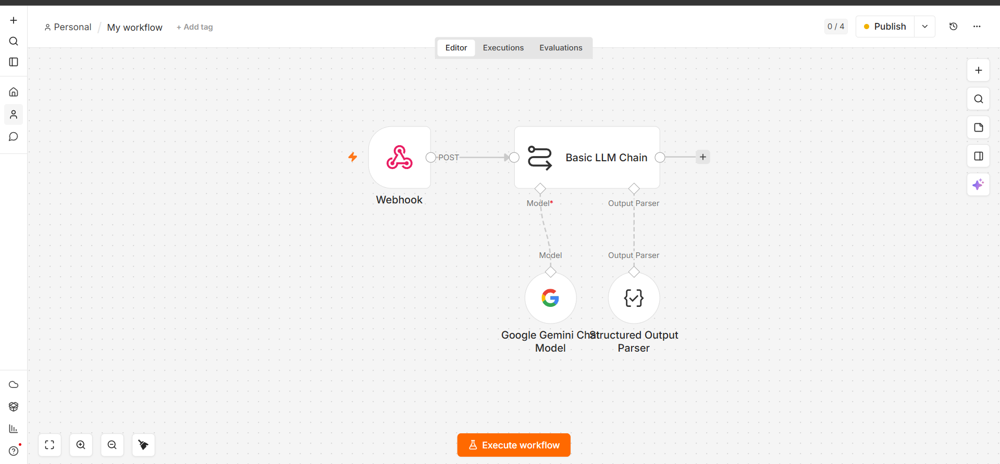
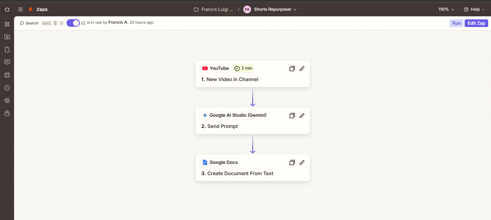

AI Automation Specialist & Workflow Engineer. I build autonomous AI pipelines and custom workflows that eliminate repetitive tasks, optimize operational costs, and scale business operations.
Objective: Built a scalable, self-hosted automation pipeline that transforms long-form video content into optimized short-form clips for multi-platform publishing, eliminating 90% of manual editing and uploading overhead.
Challenge: Manually cutting, formatting, writing descriptions, and scheduling video clips across multiple platforms (TikTok, YouTube Shorts, Reels) is highly repetitive. Standard cloud automation tools charge heavily per task, making high-volume content scaling expensive.
Solution: Architected a self-hosted n8n workflow triggered instantly by incoming webhooks. Integrated LangChain-style data flows to pass data cleanly through a Basic LLM Chain node. Leveraged Google Gemini models along with a Structured Output Parser to read media logs, identify engaging angles, and autonomously structure optimized short-form media logs entirely with zero task-fee overhead.

Objective: Designed a rapid-deployment automation workflow using Zapier to seamlessly move raw media assets, trigger AI content processing, and notify production teams instantly.
Challenge: Content production teams often experience operational bottlenecks and communication delays when raw assets are handed off manually from creators to editors.
Solution: Created an instant multi-step Zap triggered immediately when a new video lands on a designated YouTube channel. Implemented native integration with Google AI Studio (Gemini) to cleanly stream metadata, parse transcripts, and autonomously generate optimized summaries. This structured data is instantly compiled and pushed into a dynamic Google Docs system for the production team to access immediately.

Connecting apps that don't natively talk to each other using webhooks, APIs, and custom data formatting.
Embedding Large Language Models into existing company workflows to automate data extraction, customer responses, or content generation.
Migrating businesses away from expensive software (like Zapier/Make) onto cost-efficient, self-hosted n8n infrastructure to dramatically lower software overhead.